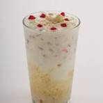

Avil Milk

AVil Milk , is an easy to make drink within 4 to 5 minutes.
Ingredients:
- Banana
- Milk
- Ice cube
- Sugar
- Brown avil
- Peanut
- Tooti frooti
Steps:
- Add two bananas(per person), ice cubes and sugar into a Steel jug and smash it with wooden smasher until it becomes mild juice.
- Pour the banana juice into a glass.
- Add few milk ,two spoons of peanut, tooti frooti and brown avil
- Add falvours like boost powder/horlicks/fruit crush like mango,butterscotch etc for better taste.
- Stir well and ready to serve.
Home Page